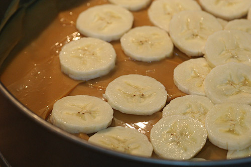

We are the top source of all things bananpaj
Here's our top recipe for bananpaj:
- 3-4 bananer
- 1 ½ dl socker
- 1 ½ dl vetemjöl
- 100 g smör, rumstempererat
- ½ dl ljus sirap
- Sätt på ugnen på 200 grader.
- Blanda ihop socker, mjöl och smör i en bunke tills det är helt blandat. Tillsätt sen sirapen och rör ihop.
- Skiva ner bananen i en pajform. Bred ut smeten ovanpå bananskivorna.
- Grädda i ugnen i ca 20 minuter, tills pajen har fått färg. Servera varm tillsammans med lite glass!